Native site frames
Local FR165 simulator diagnostic; the eight-cell barcode identifies the captured frame. Fixed source references are unverified coordinates. Mobile reference coordinates do not locate an event. Select an image for full resolution.
0: ll2:site:1Space Launch Complex 17Bfixed sourced map and marker 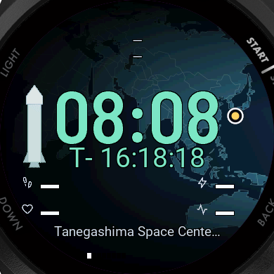
1: ll2:site:10Osaki Launch Complexfixed sourced map and marker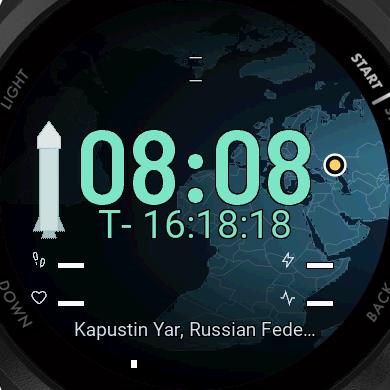
2: ll2:site:100Mayak-2fixed sourced map and marker3: ll2:site:102110/38 (110R)fixed sourced map and marker 4: ll2:site:103110/37 (110L)fixed sourced map and marker 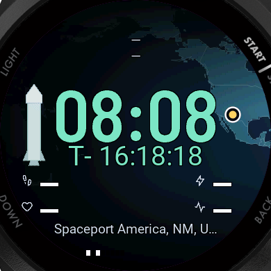
5: ll2:site:105Vertical Launch Areafixed sourced map and marker6: ll2:site:106Launch Complex 0fixed sourced map and marker 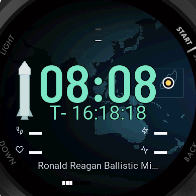
7: ll2:site:107Omelek Islandfixed sourced map and marker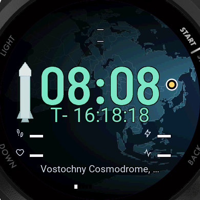
8: ll2:site:108Cosmodrome Site 1Afixed sourced map and marker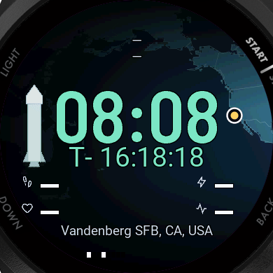
9: ll2:site:11Space Launch Complex 6fixed sourced map and marker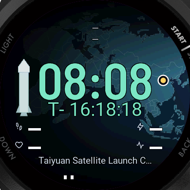
10: ll2:site:113Launch Complex 16fixed sourced map and marker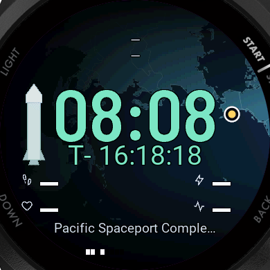
11: ll2:site:114Launch Pad 3Bfixed sourced map and marker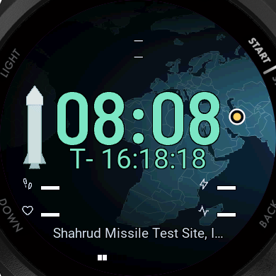
12: ll2:site:115Launch Platformfixed sourced map and marker13: ll2:site:116Launch Complex 11fixed sourced map and marker 14: ll2:site:117Space Launch Complex 13fixed sourced map and marker 15: ll2:site:118Launch Complex 18Afixed sourced map and marker 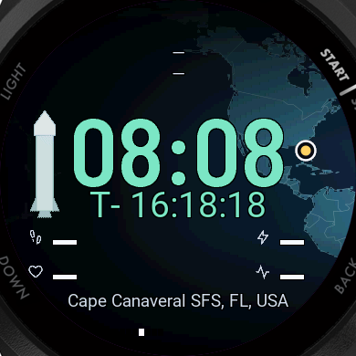
16: ll2:site:119Launch Complex 18Bfixed sourced map and marker18: ll2:site:120Space Launch Complex 20fixed sourced map and marker 19: ll2:site:121Launch Complex 36Afixed sourced map and marker 20: ll2:site:122Launch Complex 36Bfixed sourced map and marker 21: ll2:site:123Launch Complex 5fixed sourced map and marker 22: ll2:site:125Diamant Launch Areafixed sourced map and marker 23: ll2:site:12632/1fixed sourced map and marker 24: ll2:site:12732/2fixed sourced map and marker 28: ll2:site:13145/2fixed sourced map and marker 29: ll2:site:13290fixed sourced map and marker 30: ll2:site:13390/19fixed sourced map and marker 31: ll2:site:13490/20fixed sourced map and marker 33: ll2:site:136107fixed sourced map and marker 34: ll2:site:137107/1fixed sourced map and marker 35: ll2:site:138107/2fixed sourced map and marker 37: ll2:site:14Space Launch Complex 17Afixed sourced map and marker 38: ll2:site:14086/4fixed sourced map and marker 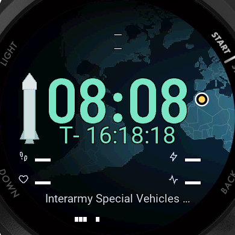
39: ll2:site:141Brigittefixed sourced map and marker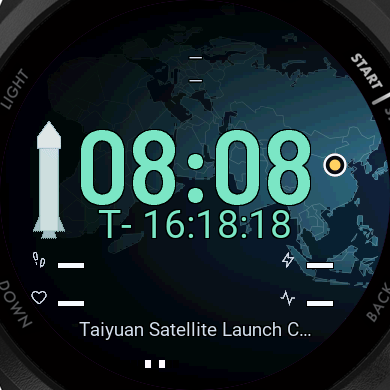
40: ll2:site:142Kaituozhe Launch Padfixed sourced map and marker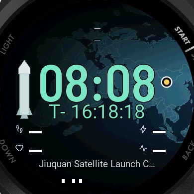
41: ll2:site:143Launch Area 2Bfixed sourced map and marker43: ll2:site:15200/39 (200L)fixed sourced map and marker 44: ll2:site:150Launch Area 120fixed sourced map and marker 45: ll2:site:151Launch Area 130fixed sourced map and marker 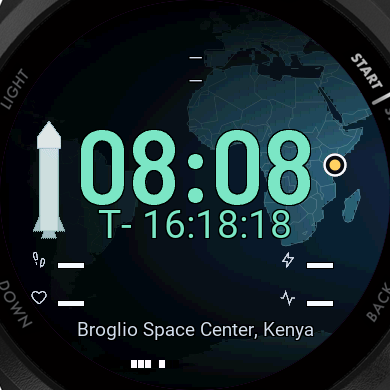
46: ll2:site:155San Marco platformfixed sourced map and marker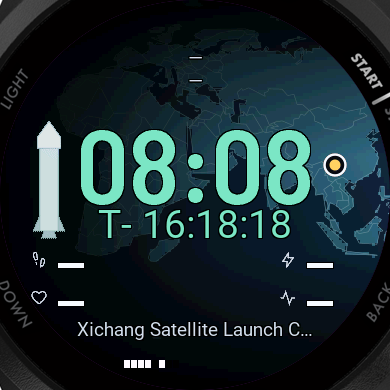
47: ll2:site:157Mobile Launcher Padfixed sourced map and marker48: ll2:site:158Mobile Launcher Padfixed sourced map and marker 49: ll2:site:159131fixed sourced map and marker 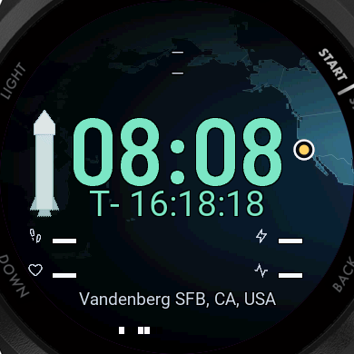
50: ll2:site:16Space Launch Complex 4Efixed sourced map and marker51: ll2:site:160161/35fixed sourced map and marker 52: ll2:site:161162/36fixed sourced map and marker 53: ll2:site:162191/66fixed sourced map and marker 55: ll2:site:16441/15fixed sourced map and marker 57: ll2:site:16667/22fixed sourced map and marker 58: ll2:site:167132/2fixed sourced map and marker 59: ll2:site:16841/1fixed sourced map and marker 60: ll2:site:17Space Launch Complex 14fixed sourced map and marker 62: ll2:site:176201fixed sourced map and marker 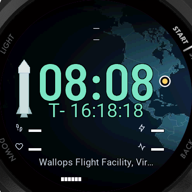
63: ll2:site:177Unknown Padfixed sourced map and marker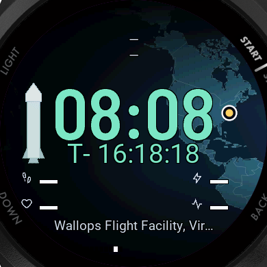
64: ll2:site:178Launch Area 3Afixed sourced map and marker65: ll2:site:179Launch Area 5Bfixed sourced map and marker 66: ll2:site:18Launch Complex 19fixed sourced map and marker 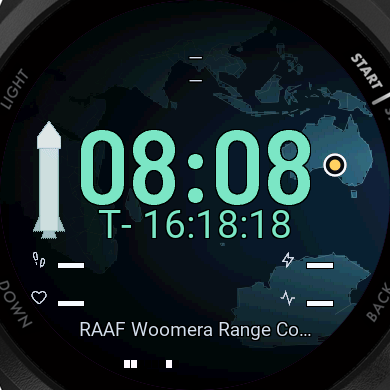
67: ll2:site:180Launch Area 6Afixed sourced map and marker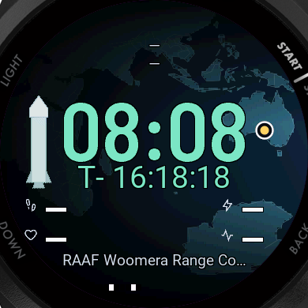
68: ll2:site:181Launch Area 8fixed sourced map and marker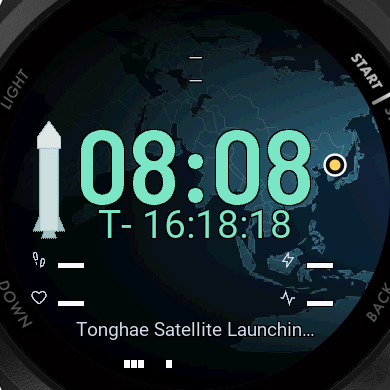
71: ll2:site:184Satellite Launch Padfixed sourced map and marker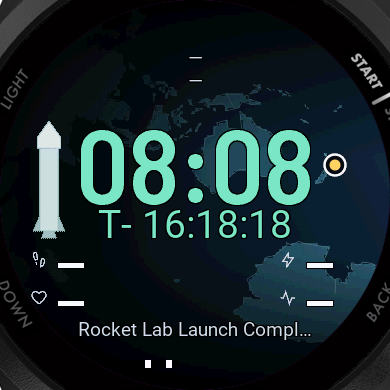
72: ll2:site:185Rocket Lab Launch Complex 1Bfixed sourced map and marker73: ll2:site:188Orbital Launch Pad 1fixed sourced map and marker 74: ll2:site:19Launch Complex 34fixed sourced map and marker 76: ll2:site:193Launch Complex 26Afixed sourced map and marker 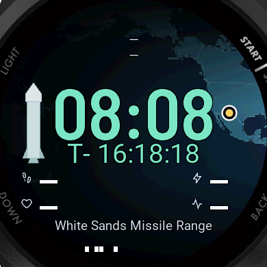
77: ll2:site:194Launch Complex 36fixed sourced map and marker78: ll2:site:195Launch Area 1fixed sourced map and marker 79: ll2:site:196Launch Area 4fixed sourced map and marker 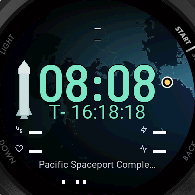
81: ll2:site:199Launch Pad 3Cfixed sourced map and marker82: ll2:site:245/1fixed sourced map and marker 83: ll2:site:2031/6fixed sourced map and marker 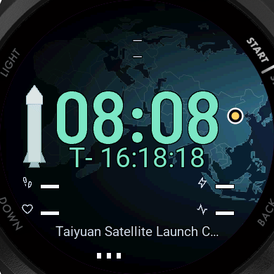
84: ll2:site:200Launch Complex 9Afixed sourced map and marker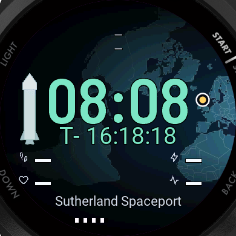
85: ll2:site:201Launch Complexfixed sourced map and marker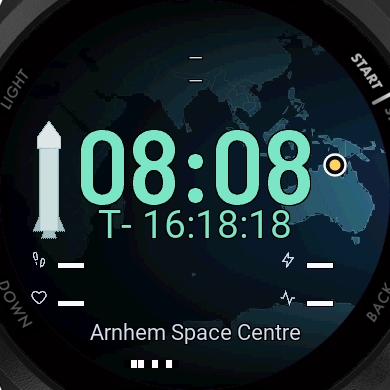
86: ll2:site:202Suborbital Launch Rampfixed sourced map and marker87: ll2:site:203Launch Complex 39A Starship Padfixed sourced map and marker 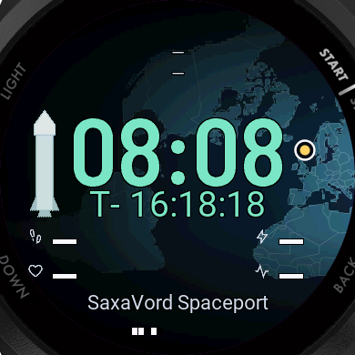
88: ll2:site:205Launch Pad Fredofixed sourced map and marker89: ll2:site:206Space Launch Complex 15fixed sourced map and marker 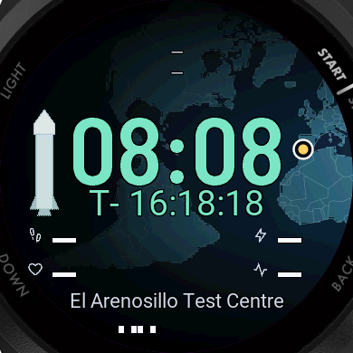
90: ll2:site:207Médano del Lorofixed sourced map and marker91: ll2:site:208Malligyong-1 Padfixed sourced map and marker 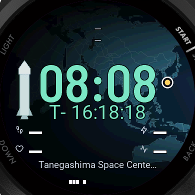
92: ll2:site:209Yoshinobu Launch Complex LP-2fixed sourced map and marker93: ll2:site:21Launch Area 95Afixed sourced map and marker 94: ll2:site:210Unknown Padfixed sourced map and marker 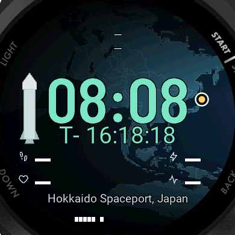
95: ll2:site:211Launch Complex 1fixed sourced map and marker96: ll2:site:212Unknown launch locationfixed sourced map and marker 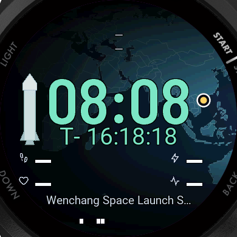
98: ll2:site:218Commercial LC-1fixed sourced map and marker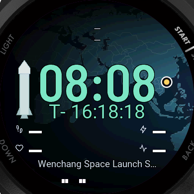
99: ll2:site:219Commercial LC-2fixed sourced map and marker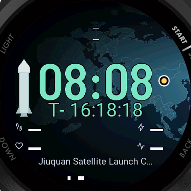
100: ll2:site:22Launch Area 94 (SLS-2 / 603)fixed sourced map and marker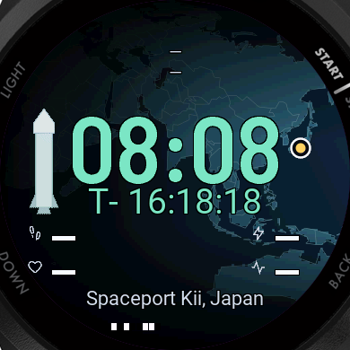
101: ll2:site:220Space One Launch Padfixed sourced map and marker102: ll2:site:221Rizhao offshore launch locationfixed sourced map and marker 103: ll2:site:222Commercial LC-3fixed sourced map and marker 104: ll2:site:234Rocket Lab Launch Complex 3 (Launch Area 0 D)fixed sourced map and marker 105: ll2:site:235Orbital Launch Pad 2fixed sourced map and marker 106: ll2:site:236Launch Complex 3Cfixed sourced map and marker 107: ll2:site:238Eris Padfixed sourced map and marker 108: ll2:site:239Launch Complex 3Bfixed sourced map and marker 109: ll2:site:24Space Launch Complex 3Efixed sourced map and marker 110: ll2:site:240HANBIT Padfixed sourced map and marker 111: ll2:site:241301fixed sourced map and marker 112: ll2:site:242Commercial LC-4fixed sourced map and marker 113: ll2:site:243Launch Area 96Bfixed sourced map and marker 114: ll2:site:244Launch Area 140fixed sourced map and marker 115: ll2:site:245Tianlong-3 Launch Padfixed sourced map and marker 116: ll2:site:246Pallas-1 Launch Padfixed sourced map and marker 117: ll2:site:247Long March 12 series Padfixed sourced map and marker 118: ll2:site:25Launch Complex 9fixed sourced map and marker 119: ll2:site:252Land Launch Pad 1fixed sourced map and marker 120: ll2:site:253Space Launch Complex 14fixed sourced map and marker 121: ll2:site:254Launch Complex 3fixed sourced map and marker 122: ll2:site:256Rocket Lab Launch Complex 4A (Launch Pad 3D)fixed sourced map and marker 123: ll2:site:257Rocket Lab Launch Complex 4B (Launch Pad 3A)fixed sourced map and marker 124: ll2:site:258SSLV Launch Complexfixed sourced map and marker 125: ll2:site:26Launch Area 95Bfixed sourced map and marker 126: ll2:site:27Space Launch Complex 46fixed sourced map and marker 127: ll2:site:28132/1 (132L)fixed sourced map and marker 128: ll2:site:29Space Launch Complex 41fixed sourced map and marker 129: ll2:site:3133/3 (133L)fixed sourced map and marker 130: ll2:site:30Launch Complex 48fixed sourced map and marker 131: ll2:site:3181/23 (81L)fixed sourced map and marker 132: ll2:site:321/5fixed sourced map and marker 133: ll2:site:33Launch Complex 7fixed sourced map and marker 134: ll2:site:34Ariane Launch Area 1 (ELV)fixed sourced map and marker 135: ll2:site:3516/2fixed sourced map and marker 136: ll2:site:3643/3 (43L)fixed sourced map and marker 137: ll2:site:37Launch Area 91 (SLS-1 / 921)fixed sourced map and marker 138: ll2:site:38Space Launch Complex 37Bfixed sourced map and marker 139: ll2:site:39Space Launch Complex 2Wfixed sourced map and marker 140: ll2:site:4Launch Complex 39Bfixed sourced map and marker 141: ll2:site:41Yoshinobu Launch Complex LP-1fixed sourced map and marker 142: ll2:site:4235/1fixed sourced map and marker 143: ll2:site:43KS Centerfixed sourced map and marker 144: ll2:site:44Unknown Padfixed sourced map and marker 145: ll2:site:45Launch Complex 2 (LC-2)fixed sourced map and marker 146: ll2:site:47Mu Centerfixed sourced map and marker 147: ll2:site:48Unknown Padfixed sourced map and marker 148: ll2:site:5175/59fixed sourced map and marker 149: ll2:site:50Satish Dhawan Space Centre First Launch Padfixed sourced map and marker 150: ll2:site:51Orbital Launch Padfixed sourced map and marker 151: ll2:site:56Launch Area 0 Bfixed sourced map and marker 152: ll2:site:57Launch Pad 1fixed sourced map and marker 153: ll2:site:58Safir Launch Padfixed sourced map and marker 154: ll2:site:6Launch Area 2Afixed sourced map and marker 155: ll2:site:60Unknown Padfixed sourced map and marker 156: ll2:site:63LP-41fixed sourced map and marker 157: ll2:site:64LC-1fixed sourced map and marker 158: ll2:site:65Rocket Lab Launch Complex 1Afixed sourced map and marker 159: ll2:site:66Launch Complex 3 (LC-3/LA-1)fixed sourced map and marker 160: ll2:site:67Ariane Launch Area 4fixed sourced map and marker 161: ll2:site:68Unknown Padfixed sourced map and marker 162: ll2:site:69Unknown Padfixed sourced map and marker 163: ll2:site:781/24 (81P)fixed sourced map and marker 164: ll2:site:71Unknown Padfixed sourced map and marker 165: ll2:site:72Unknown Padfixed sourced map and marker 166: ll2:site:73Unknown Padfixed sourced map and marker 167: ll2:site:74Unha Launch Padfixed sourced map and marker 168: ll2:site:75Shavit Launch Padfixed sourced map and marker 169: ll2:site:76Launch Area 0 Afixed sourced map and marker 170: ll2:site:77Ariane Launch Area 3fixed sourced map and marker 171: ll2:site:78Unknown Padfixed sourced map and marker 172: ll2:site:79Rocket Lab Launch Complex 2 (Launch Area 0 C)fixed sourced map and marker 173: ll2:site:8Space Launch Complex 8fixed sourced map and marker 174: ll2:site:80Space Launch Complex 40fixed sourced map and marker 175: ll2:site:81Soyuz Launch Complexfixed sourced map and marker 176: ll2:site:82Satish Dhawan Space Centre Second Launch Padfixed sourced map and marker 177: ll2:site:83Cosmodrome Site 1Sfixed sourced map and marker 178: ll2:site:8543/4 (43R)fixed sourced map and marker 179: ll2:site:86Unknown Padfixed sourced map and marker 180: ll2:site:87Launch Complex 39Afixed sourced map and marker 181: ll2:site:88Imam Khomeini Spaceportfixed sourced map and marker 182: ll2:site:89Haiyang offshore launch locationfixed sourced map and marker 183: ll2:site:9Launch Area 96Afixed sourced map and marker 184: ll2:site:90West Texas Suborbital Launch Site/ Corn Ranchfixed sourced map and marker 185: ll2:site:92Launch Complex 16fixed sourced map and marker 186: ll2:site:94Launch Area 3fixed sourced map and marker 187: ll2:site:97Launch Complex 26Bfixed sourced map and marker 188: ll2:site:99Launch Complex 12fixed sourced map and marker 189: ll2:site:101Unknown Padevent position unavailable; no marker 190: ll2:site:104Guam International Airportevent position unavailable; no marker 191: ll2:site:109Cecil Air and Space Portevent position unavailable; no marker 192: ll2:site:110Andersen Air Force Baseevent position unavailable; no marker 193: ll2:site:112Edwards Air Force Baseevent position unavailable; no marker 194: ll2:site:13Launch Platform Odysseyevent position unavailable; no marker 195: ll2:site:144Yellow Sea (launch location 2)event position unavailable; no marker 196: ll2:site:145Naval Air Weapons Station China Lakeevent position unavailable; no marker 197: ll2:site:147Novomoskovsk (K-407)event position unavailable; no marker 198: ll2:site:148Borisoglebsk (K-496)event position unavailable; no marker 199: ll2:site:149Ekaterinburg (K-84)event position unavailable; no marker 200: ll2:site:186Yellow Sea (launch location 1)event position unavailable; no marker 201: ll2:site:189Spaceport Cornwallevent position unavailable; no marker 202: ll2:site:190Mojave Air and Space Portevent position unavailable; no marker 203: ll2:site:191Spaceport Americaevent position unavailable; no marker 204: ll2:site:213Launch Pad Callumevent position unavailable; no marker 205: ll2:site:214Launch Pad Elizabethevent position unavailable; no marker 206: ll2:site:216ADD Offshore launch platformevent position unavailable; no marker 207: ll2:site:217South China Sea (launch location 1)event position unavailable; no marker 208: ll2:site:237Unknown Padevent position unavailable; no marker 209: ll2:site:248Yellow Sea (launch location 3)event position unavailable; no marker 210: ll2:site:249Yellow Sea (launch location 4)event position unavailable; no marker 211: ll2:site:250South China Sea (launch location 2)event position unavailable; no marker 212: ll2:site:251South China Sea (launch location 3)event position unavailable; no marker 213: ll2:site:255Yellow Sea (launch location 5)event position unavailable; no marker 214: ll2:site:46Gran Canariaevent position unavailable; no marker 215: ll2:site:52Wallops Flight Facilityevent position unavailable; no marker 216: ll2:site:53Mojave Air and Space Portevent position unavailable; no marker 217: ll2:site:59Kwajalein Atollevent position unavailable; no marker 218: ll2:site:62Vandenberg Space Force Baseevent position unavailable; no marker 219: ll2:site:70Edwards Air Force Baseevent position unavailable; no marker 220: ll2:site:84Cape Canaveralevent position unavailable; no marker 221: spacefox:site:esrange-sounding-areaEsrange sounding-rocket launch area (pad unresolved)event position unavailable; no marker 222: spacefox:site:spaceport-nova-scotiaSpaceport Nova Scotiaevent position unavailable; no marker 223: spacefox:site:uchinoura-sounding-areaUchinoura sounding-rocket launch area (pad unresolved)event position unavailable; no marker